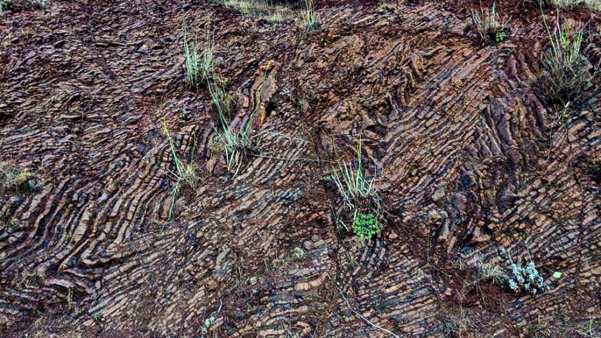

1 / 6

2 / 6

3 / 6

4 / 6

5 / 6

6 / 6


Colorful metamorphics at Ruby Island, Lake Wanaka, New Zealand
Stromatolites (~1.1 Ga) at Horseshoe Harbor, Copper Harbor, MI
Folded radiolarian ribbon chert in the Marin Headlands, San Francisco Bay Area, CA
Flame structures near the paparoa metamorphic core complex, New Zealand
Massive ignimbrite deposit in Pikowai, Bay of Plenty, New Zealand (Person for scale)
Sigma porphyroclast near the paparoa metamorphic core complex, New Zealand
Diabase dike near Sugarloaf Mountain, Marquette, MI

Active bioturbation zone at South Bay, Kaikoura, New Zealand

Whakaari/White Island, Bay of Plenty, New Zealand

Mt. Ngauruhoe, New Zealand ("Mt. Doom" from LOTR)

View from the Greenstone Ridge (Mid-Continent Rift volcanics), Isle Royale, MI

Limestone wave-cut platform at South Bay, Kaikoura, New Zealand

Early morning views in Cass, New Zealand

Sunrise at Moskey Basin, Isle Royale, MI

Sea platform, exposed after the 2016 Kaikoura earthquake
The famous "pancake rocks" at Punakaiki, New Zealand